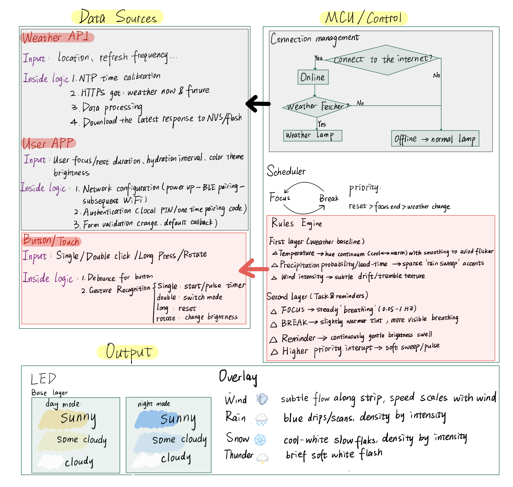

Observations and Proposal
User Observations
Student (Library)
- Checks phone regularly, often around :00 or :30.
- Glances at phone, then suddenly packs up belongings and leaves the library.
- Notices other students bringing umbrellas, then checks own phone.
- Asks peers quietly, “Is it raining? Did you bring an umbrella?”
- Opens timer/calendar app on laptop or tablet.
- Checks phone before leaving or entering the library.
- Remains seated at the desk without stretching or drinking water.
- Sits with body bent forward, focused on studying.
Researcher (Lab)
- Glances at the laptop clock or calendar app while working, seemingly checking how much time has passed.
- Briefly unlocks their phone, checks notifications, then places it face-down again.
- Hesitates before starting work, often reorganizing notes or tabs before settling into focus.
- Once engaged, sits for long stretches without standing, stretching, or hydrating.
- Keeps a deeply focused posture—shoulders hunched, eyes fixed on the screen.
- Appears frustrated when interrupted mid-thought; takes time to regain flow.
- Walks out still thinking about research tasks, sometimes making notes or voice memos on the way.
Worker (Office)
- Leaves desk quickly when realizing time, sometimes after glancing at phone.
- Sees coworker with an umbrella, then immediately checks phone.
- Opens weather tab on computer during the workday.
- Glances at window multiple times while working.
- Works at desk for long periods without moving.
- Says aloud, “Oh no, it’s raining already—I didn’t bring an umbrella.”
- Checks phone before leaving and when entering the office.
- Leans forward over keyboard and screen for long periods.
Identifying the problem
Interaction problems
- Reliance on Phones for Time and Weather
- All three groups consistently checked their phones before leaving or entering their workspace to confirm the time and weather.
- Many also glanced at their phones during study/work sessions (often around :00 or :30). This created unnecessary distraction and often led to unrelated notifications drawing their attention away from the task.
- Sudden and Unprepared Departures
- Students and workers frequently checked their phones and then rushed to leave, sometimes forgetting items or leaving unprepared for the weather..
- Weather awareness typically came reactively—noticing others' umbrellas or coats—rather than from proactive, calm cues.
- Weather Awareness Through Indirect or Social Cues
- Instead of using a reliable system, users looked out windows or asked peers questions like "Is it raining? Did you bring an umbrella?"
- This behavior indicates a lack of dependable weather preparedness during transitions between spaces.
- Neglect of Physical Well-being During Long Sessions
- - Both students and researchers sat for extended periods, often hunched forward, without stretching or hydrating.
- Workers similarly remained at their desks without movement, responding only to external interruptions. This suggests an absence of gentle reminders for breaks and self-care.
Opportunity for Improved Design
- Provides glanceable cues for both time and weather, eliminating distracting phone checks.
- Supports smooth, prepared transitions between spaces, helping users leave on time and with appropriate weather forecasting.
- Encourages healthy micro-breaks (stretching, hydrating) through non-intrusive light signals, reducing fatigue without disturbing others.
Supporting Materials
Since we did not capture photographs or video clips during the initial observation phase, we created a series of illustrations using ChatGPT to represent the interaction problems and opportunities for improved design. These illustrations are based directly on our observations of students, researchers, and workers in their respective environments.
Figure 1. A student notices peers carrying umbrellas and checks their phone.
Figure 2. A student glances at their phone while studying, then suddenly packs up their belongings to leave the library.
Figure 3. Researchers sit hunched over a laptop for long periods, not stretching or hydrating.
Figure 4. Before leaving the lab, the researcher checks their phone
Figure 5. An office worker reacts to colleagues entering with umbrellas by checking their phone. A colleague glances outside, asking, “Is it raining?”
Figure 6. Workers remain at their desks without moving, focused on screens, showing the lack of reminders for breaks.
Persona 1 – The Student
Name: Sarah Kim
Age: 21
Occupation: Undergraduate Student (Biology major)
Context: Studies long hours in the library, often in shared spaces with other students.
Goals:
- Stay focused during study sessions without being startled by alarms.
- Remember to hydrate and take breaks to avoid fatigue.
- Stay aware of upcoming weather changes while studying, so she’s prepared before leaving home or school (e.g., for class, errands, or heading back to the dorm/home)
Frustrations:
- Alarms/timers make her anxious and disturb others in quiet study spaces.
- She forgets to stretch or drink water when deeply focused.
- She often leaves unprepared for sudden weather (e.g., without a jacket or umbrella).
How the Calm Companion System helps:
- Provides calm, ambient cues for focus timing and shows upcoming weather changes without the need for phone checks.
- The lamp’s color gradient reflects upcoming weather, so she can prepare before heading out—whether for class, errands, or commuting home.
- Subtle light-based break reminders (gentle pulse or color shift) prompt Sarah to stretch or hydrate during long study sessions.
User case scenarios:
Scenario 1a – Study and Breaks
Sarah is in the library, preparing for an upcoming exam. She sets the Lamp to study mode. Instead of hearing a loud alarm, she notices the lamp softly shifting its glow, signalling it is time to take a break. She can customise the break cycle (for example, 40 minutes of work followed by a 10-minute rest). This gentle cue allows her to stretch and drink water without disturbing her peers. When she needs a reminder to leave for her lecture, she programs the lamp to flash or change colour at the set time.
Scenario 1b – Weather Awareness
Beyond time management, the Lamp provides Sarah with subtle weather information. Its gradual color gradient shows both current conditions and the forecast for the next few hours. Even when it looks sunny as she leaves her dorm, the lamp alerts her to expected rain later, ensuring she brings an umbrella and avoids being caught unprepared.
Persona 2 – The Researcher
Name: Dr. Amir Hassan
Age: 34
Occupation: Postdoctoral Researcher (Physics lab)
Context: Works in shared labs and offices, doing deep-focus tasks like coding, writing, or experiments.
Goals:
- Maintain concentration for long research sessions.
- Respect quiet lab environments (no disruptive alarms).
- Avoid fatigue by taking short, restorative breaks.
- Stay prepared for campus events, meetings, or commuting home by noticing weather changes in advance.
Frustrations:
- Phone timers or alarms interrupt his thought process and distract colleagues.
- Skips break, leading to posture issues and fatigue.
- Doesn’t always notice when weather changes before heading to a seminar or bus stop.
How the Calm Companion System helps:
- Provides silent light cues that help him manage focus and break cycles without disturbing colleagues.
- Subtle ambient reminders encourage Amir to stretch, hydrate, or adjust posture during long work sessions.
- The lamp’s color and gradient display show both current and forecasted weather, so he’s already prepared before leaving for events or his commute.
User case scenarios:
Scenario 2a – Focus and Breaks
Amir spends hours running simulations in his lab. Deeply immersed in his work, he frequently forgets to move or take breaks. With the lamp on his desk, the ambient light gradually shifts, reminding him to pause and stretch without disrupting the quiet lab environment. He can also use the lamp as a silent alarm for upcoming meetings or seminars.
Scenario 2b – Weather Awareness
In addition to managing his focus, Amir also benefits from the lamp’s colour gradient, which subtly reflects weather changes. By glancing at the lamp, he can anticipate shifts in temperature or rain and decide whether to bring a jacket before leaving the lab for a seminar or his commute home.
Persona 3 – The Worker
Name: Alex Chen
Age: 28
Occupation: Marketing Coordinator
Context: Commutes downtown daily, often rushing in the morning; spends long hours at his office desk.
Goals:
- Leave home prepared for rain/snow.
- Monitor weather shifts during the day (for lunch, meeting, or the commute) without distractions.
- Stay productive and focused without constantly checking his phone.
- Maintain energy during long desk sessions with subtle reminders to take breaks.
Frustrations:
- Forgets to check the weather before leaving and often gets caught in rain.
- Weather apps pull him into unrelated notifications when checked at work.
- Dislikes intrusive phone alerts while concentrating.
- Tends to skip stretching or hydration when absorbed in tasks.
How the Calm Companion System helps:
- Ambient light communicates current and forecasted weather conditions, helping Alex plan ahead without reaching for his phone.
- Subtle light-based reminders encourage him to stretch or drink water, supporting health and productivity during long desk hours.
- The lamp provides calm, unobtrusive awareness—keeping him prepared for his commute or lunch breaks without disrupting his focus.
User case scenarios:
Scenario 3a – Morning Preparation
Alex rushes out of his apartment on a Monday morning, already running late. With no time to check his phone, he relies on the Lamp to quickly see both the current temperature and the forecast for the coming hours. This allows him to decide whether to wear lighter or heavier clothing before heading out. Since Alex usually spends the entire day at the office, he configures the lamp to display weather conditions several hours in advance, helping him prepare appropriately for his commute home.
Scenario 3b – During the Workday
At his desk, Alex keeps the Lamp within view. Without opening distracting apps on his phone, he notices the lamp slowly shift to a cooler shade, signalling that rain is approaching. This subtle cue helps him adjust his schedule—for example, choosing to take lunch earlier or leaving work a bit sooner—so he avoids being caught in bad weather during his commute.
Related Products
Forest. This is a popular mobile Pomodoro timer app that encourages users to stay focused by “growing” virtual trees during work sessions. While this app gamifies focus in a positive way, it heavily relies on the phone screen. This dependency creates two limitations. First, users are still exposed to the very notifications and distractions they are trying to avoid, since opening the phone for the timer can easily lead to checking messages or social media. Second, Forest still displays numerical countdowns and sends audible notifications, which can heighten anxiety and disrupt the quiet of shared environments like libraries or labs. From the perspective of calm technology, Forest remains too “foregrounded” and attention-demanding rather than fading into the periphery.
Comparison: The Calm Companion Lamp offers a calmer and less distracting experience for users like Sarah (the student) and Amir (the researcher). Forest relies on phone screens, numerical countdowns, and sound notifications, all of which can create anxiety or draw attention away from study tasks. By contrast, our lamp eliminates screens and numbers entirely, using only subtle light transitions to guide focus and break cycles. This makes it more suitable for quiet, shared environments, where loud alarms or phone-checking would disturb others.
Google Nest Hub. This a smart display that integrates reminders, timers, and weather forecasts. While it can provide information about the day’s weather and set countdowns, it has several shortcomings in the contexts we focus on. The device primarily relies on active user engagement: the user must ask Google Assistant for weather updates or timers, which interrupts concentration and demands explicit interaction. Moreover, its use of screen-based and voice-based feedback can be disruptive in shared or quiet spaces, making it unsuitable for environments like libraries or labs. Moreover, the screen’s visual presentation often overloads users with details rather than providing the simple, ambient cues that calm technology requires.
Comparison: The Calm Companion Lamp offers a calmer and less distracting experience for users like Sarah (the student) and Amir (the researcher). Forest relies on phone screens, numerical countdowns, and sound notifications, all of which can create anxiety or draw attention away from study tasks. By contrast, our lamp eliminates screens and numbers entirely, using only subtle light transitions to guide focus and break cycles. This makes it more suitable for quiet, shared environments, where loud alarms or phone-checking would disturb others.
Architectural Diagram
Justifying Feasibility
We are confident that the WeatherFocus Lamp can be built and evaluated by the end of the semester. The system uses widely available hardware and lightweight software, and the workload fits within the guideline of 20–30 hours per group member.
Hardware Feasibility
- Core components: ESP32 or Raspberry Pi microcontroller with Wi-Fi, an addressable RGB LED strip, and a simple lamp casing/diffuser.
- Practicality: All components are inexpensive, accessible, and supported by extensive online documentation. Assembly involves straightforward wiring and housing design. With prior experience in Raspberry Pi hardware projects, our team can complete this step efficiently.
Software Feasibility
- Weather API integration: The microcontroller will retrieve local weather data from an API such as OpenWeatherMap. Parsing JSON data and mapping it to LED colors (e.g., sunny = warm yellow, rainy = blue) is a well-documented process.
- Focus timer logic: Timer functionality will run on the microcontroller firmware. During focus sessions, the lamp will hold a steady color; at the end, it will gently flash to signal a break.
- Mobile interaction: Rather than building a full mobile app, we will host a lightweight web interface on the ESP32/Raspberry Pi. Users can connect via Wi-Fi to set timers and allow location access for weather services. This reduces complexity while maintaining usability.
Team Skills and Preparedness
- Jiayu Geng: Experienced in hardware architecture and prototyping (PCB, 3D printing, enclosure), in developing firmware for the lighting/rendering pipeline; accountable for hardware circuit design and embedded code development.
- Woojin Jang: Software engineering major with hands-on Raspberry Pi experience; responsible for firmware development, system integration, and API communication.
- Pepper Wang: Strong background in User Experience and HCI research; responsible for prototyping, usability study design, and qualitative/quantitative evaluation. Also experienced in web development, supporting the mobile-friendly control interface.
Time Effort Estimate
- Hardware assembly & casing: 8–10 hours
- Firmware development (timers, LED transitions): 8–10 hours
- Weather API integration: 4–6 hours
- Web interface for mobile control: 6–8 hours
- User testing and documentation: 6–8 hours
This results in ~22–26 hours per member, well within the expected 20–30 hour range.
Conclusion
The WeatherFocus Lamp is highly feasible because it leverages accessible hardware, simple software building blocks, and the team’s complementary expertise. With Raspberry Pi and embedded programming experience, web development and data analysis skills, and strong UX/HCI design capabilities, our group is well prepared to deliver both a working prototype and meaningful user evaluation by the end of the semester.
REB form
Group/student names:
Group J: Jiayu Geng, Woojin Jang, Pepper Wang
Title of Project:
Calm companion lamp
Project/Study Description (2-3 sentences):
This project explores a calm technology lamp designed to support focus, healthy break-taking, and weather preparedness. The lamp uses ambient light to indicate focus/break cycles, provides gentle reminders for hydration and stretching, and displays subtle weather cues (e.g., color changes or gradients) to help users anticipate changes without needing disruptive alarms or phone checks. Usability testing and interviews will evaluate how the lamp supports concentration and daily routines in shared study or work environments.
Number and type of participants (gender, age range, other particulars such as athletes, farmers, musicians, etc.) :
We plan to recruit 8–12 participants for this study. All participants will be 18 years or older, and we will ensure demographic diversity including age, gender, education status and so on. Participants must be comfortable communicating in English and should have regular experience with long periods of focused desk work, such as students, researchers, or office workers.
How and from where are they recruited:
Recruitment will be conducted by spreading a call for participation through campus channels, community postings, and social media. In addition, snowball sampling will be encouraged, allowing participants to refer others who meet the study criteria.
What risk could this study entail for participants?:
We do not foresee any harm associated with this project. The risks associated with this research are minimal and equivalent to what individuals would experience in their daily lives. However, some unpleasant emotions may arise when discussing the experience of high-intensity work.
How can these risks be mitigated?:
To address potential negative emotions, we will inform participants that they are free to take breaks as needed or to drop out of the study at any time without penalty. We also inform them that we can adapt the timing, location and delivery of the study to accommodate their needs.